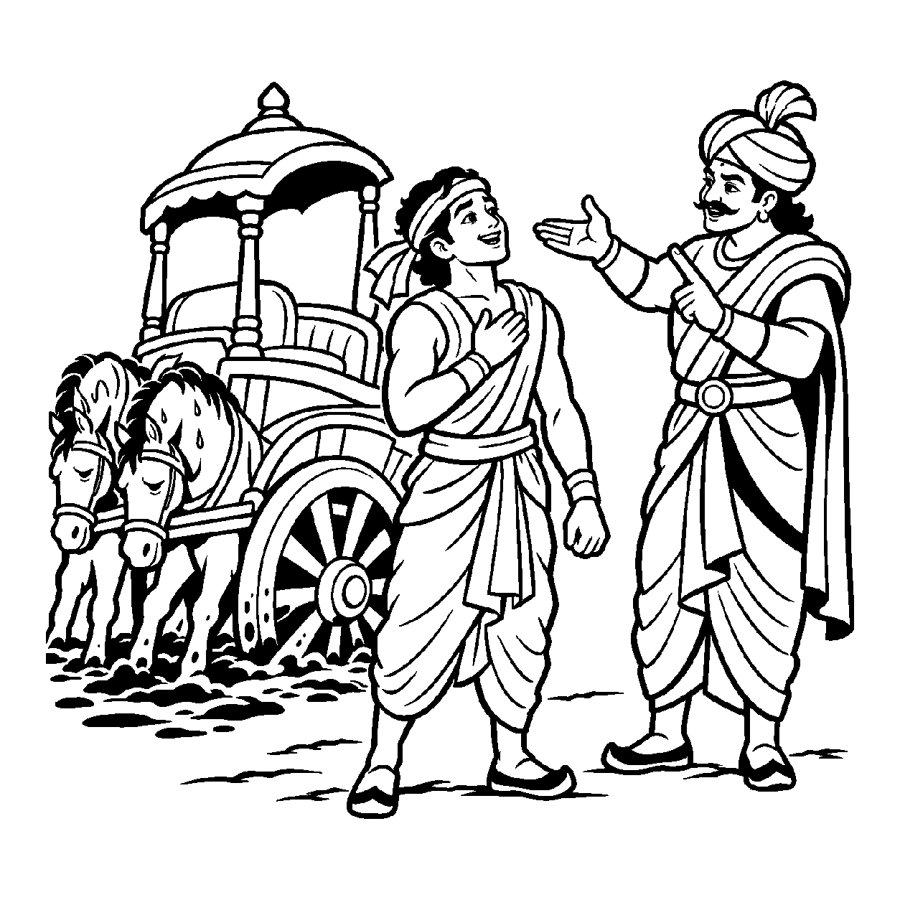

લુહારની ધમણમાંથી બહાર કાઢેલો લોખંડનો મોટો ગોળો અગ્નિથી તપીને એટલો લાલ થઈ ગયો છે કે તેમાંથી તણખા ઝરે છે. નાનું બાળક જોઈને કહે છે: "આ અગ્નિનો લાલ ગોળો છે!" વાસ્તવમાં લોખંડ એ કાળી, ભારે ધાતુ છે અને અગ્નિ એ તેજસ્વી, ઉષ્ણ તત્વ છે. બંને વિજાતીય હોવા છતાં એવા ગાઢ રીતે ભળી ગયા છે કે લોઢાને અગ્નિ કહી દેવો એ વ્યવહારિક સત્ય બની ગયું છે. તેવી જ રીતે ચેતન અરૂપી આત્મા અને જડ મૂર્તિક પુદ્ગલ શરીર બંને સર્વથા વિજાતીય દ્રવ્યો હોવા છતાં, જ્યાં સુધી આયુષ્ય કર્મનો બંધ છે ત્યાં સુધી દૂધ અને પાણીની જેમ સંશ્લિષ્ટ (એકમેક) થઈને રહે છે. આથી લોકવ્યવહારમાં — "આ શરીર આ જીવનું છે, હું ગોરો છું, હું બીમાર છું કે આ શરીર જ આત્મા છે" — એમ એકમેક ભળેલા વિજાતીય તત્વો વચ્ચે સંબંધ બાંધવો તેને 'સંશ્લિષ્ટ વિજાત્યુપચરિત અસદ્ભૂત વ્યવહાર' કહેવાય છે.
પરમાર્થ દ્રષ્ટિએ આત્મા ક્યારેય પુદ્ગલમય થતો નથી અને શરીર ક્યારેય જ્ઞાતા બનતું નથી. છતાં શરીરમાં સોય ભોંકાય ત્યારે આત્મામાં પીડાનો અનુભવ થાય છે અને મનના સંકલ્પથી હાથ ઊંચો થાય છે. આ અદ્ભુત સંશ્લેષને કારણે જ સંસારમાં જીવની ઓળખ તેના સ્થૂળ દેહથી થાય છે. આ નય વિના જન્મ, મૃત્યુ કે રોગ-નિવારણની કોઈ પણ લૌકિક ક્રિયા સંભવ બનતી નથી.
આ નય સાધકને સમજાવે છે કે શરીર ભલે સંશ્લેષ પામેલું હોય, પણ મૃત્યુ વખતે તે છૂટી જશે; માટે દેહની સંભાળ કેવળ સાધનાના સાધન તરીકે જ કરવી.
ચેતન અમૂર્ત આતમા, જડ પુદ્ગલનો દેહ;
દૂધ-પાણી સમ ભળ્યા, સંશ્લિષ્ટ બંધ સસ્નેહ.
દેહ પીડા આતમ લહે, બોલે જગ વ્યવહાર;
ભેદજ્ઞાનથી પરખતાં, પામે મોક્ષનો દ્વાર.
તે વ્યવહારિક સંયોગોની મર્યાદા દર્શાવીને પણ આંતરિક ગુણો પ્રગટાવવાની પ્રેરણા આપે છે, જેથી સાધક નિજ ચૈતન્ય સ્વરૂપમાં મહામૌનમાં અંતર્લીન થઈ જાય છે.

યુદ્ધક્ષેત્રમાં એક બહાદુર સારથિ સુમિત્ર પોતાના વિશાળ રથને હાંકી રહ્યો હતો. અચાનક રથના બંને પૈડાં કાદવ અને દલદલમાં ઊંડે સુધી ખૂંપી ગયાં. ઘોડા પણ થાકી ગયા અને રથ જરાય આગળ ન વધ્યો. સુમિત્ર રથની અંદર બેસીને રડવા લાગ્યો: "હું કાદવમાં ડૂબી ગયો! મારું અસ્તિત્વ હવે કાદવ બની ગયું છે! મારું જીવન હવે કદી બહાર નીકળી શકશે નહીં!" તે રથના લાકડાને પકડીને ધ્રૂજતો રહ્યો. રથ અને પોતાની જાત વચ્ચેનો ભેદ તે ભૂલી ગયો હતો.
તે સમયે ત્યાંથી સેનાપતિ પસાર થયા. તેમણે સુમિત્રને જોરથી અવાજ આપીને કહ્યું: "સુમિત્ર! રથમાંથી કૂદીને બહાર આવ! સંશ્લિષ્ટ વિજાત્યુપચરિત અસદ્ભૂત વ્યવહારને સમજ! તું રથ નથી, તું તો રથને ચલાવનારો ચેતનવાન સારથિ છે! રથ લાકડાનો અને કાદવ માટીનો છે. રથ કાદવમાં ખૂંપ્યો છે, તું નહીં! જ્યાં સુધી તું રથમાં બેઠો છે ત્યાં સુધી જ લોકો કહે છે કે 'સારથિ અટવાઈ ગયો', પણ તું તો ક્ષણવારમાં રથમાંથી કૂદીને સ્વતંત્ર ઊભો રહી શકે છે!" સુમિત્રે તરત જ રથમાંથી કૂદકો માર્યો અને સૂકી ધરતી પર આવી ગયો. તેના હાથ-પગ સર્વથા મુક્ત હતા! રથ ખૂંપ્યો હતો, પોતે સુરક્ષિત હતો. આ સત્ય સમજાતાં જ તેનો ભય ઓગળી ગયો. આ વિવેકથી સાધક પણ દેહરૂપી રથથી ભિન્ન થઈ પોતાના ચૈતન્યમય પરમાત્મતત્વમાં સમાઈ જાય છે.
જો જીવ શરીરના સંશ્લેષને જ આત્માનું અંતિમ સત્ય માની લે, તો તે દેહના નાશને આત્માનો નાશ માનીને અતિશય ત્રાસ અને ભયમાં જીવે છે. પરદ્રવ્યો કે ક્ષણિક સંયોગોને જ સર્વસ્વ માની લેવાથી મમત્વ અને પરિગ્રહનો ભાર વધે છે, જે ચિત્તને સદા આકુળ-વ્યાકુળ રાખી આધ્યાત્મિક જાગૃતિને રૂંધી નાખે છે.
આ નય દેહ સાથેના ઔપચારિક સંબંધને સાધના માટે સ્વીકારીને પણ ચેતનાની પરમ અલિપ્તતા પ્રગટાવે છે, જેથી સાધક મહામૌનમાં વિશ્રામ પામે છે. તે વ્યવહારિક સંયોગોની મર્યાદા દર્શાવીને પણ આંતરિક ગુણો પ્રગટાવવાની પ્રેરણા આપે છે, જેથી સાધક નિજ ચૈતન્ય સ્વરૂપમાં મહામૌનમાં અંતર્લીન થઈ જાય છે.